H2 - P2018
Développement web
Cours 07 - 2014-11-02
- github : https://github.com/brunosimon/hetic-p2019
- site : http://bruno-simon.com/hetic/p2019/
- contact : bruno.simon@hetic.net
Debug Chrome
- Chrome a été conçu pour aider les développeurs dans la conception de sites
- La majorité des features que nous allons voir dans les slides suivantes sont disponibles dans Firefox
- Savoir utiliser ces features vous permettra de gagner du temps et de repérer des erreurs
Accéder aux outils de développement
Dans le menu :
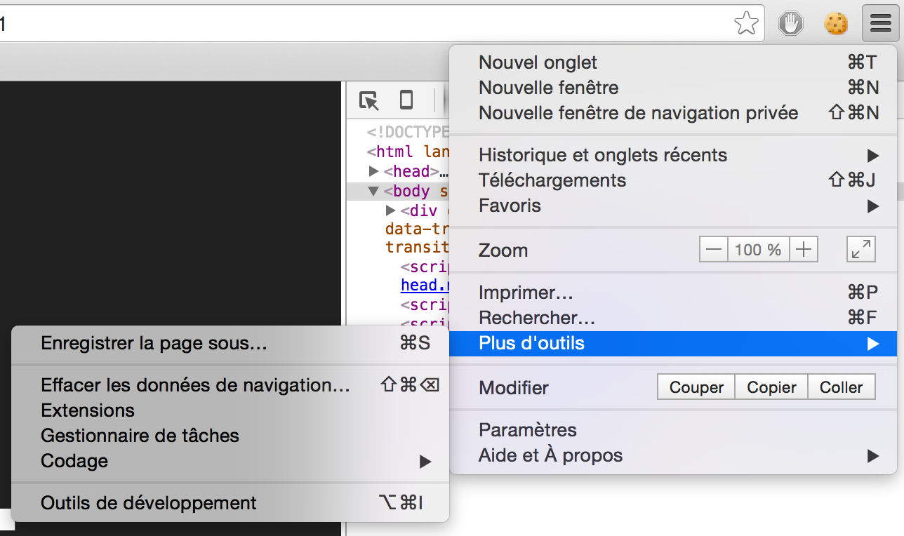Via raccourci :
- Mac : CMD + ALT + I
- Win : CTRL + MAJ + J
Le panneau qui s'ouvre peut-être placé en bas, sur la droite ou dans une nouvelle fenêtre
Cliquez sur les 3 points pour faire apparaître le choix
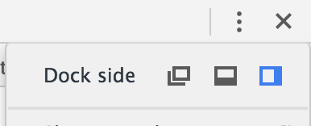
Les outils sont organisés dans des onglets que nous allons étudier un par un
Si l'écran est trop petit, une double flèche permet d'accéder aux autres onglets
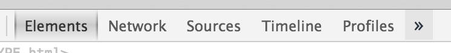
Éléments

DOM
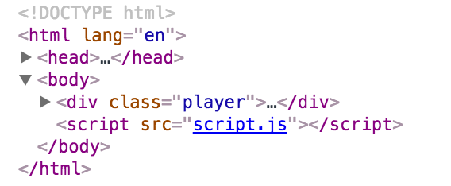
- Permet de naviguer dans les éléments
- Met en surbrillance l'élément et indique sa taille
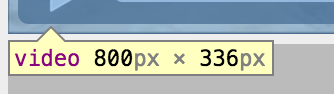 - Indique la hiérarchie de l'élément
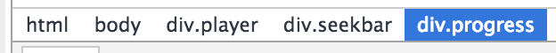
L'icône en haut à gauche permet de pointer directement sur l'élément dans la page
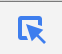
Il est possible de modifier le DOM
- Créer élément
- Supprimer élément
- Déplacer élément
- Gérer les attributs
- ...
Une surbrillance mettra en valeur les changements effectués en JS sur le DOM
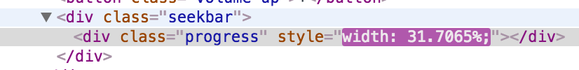
Style
L'onglet Styles du panneau du bas permet de gérer le style de l'élément sélectionné
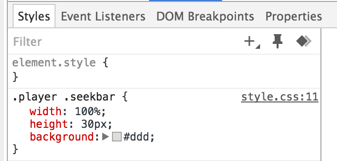
Les propriétés peuvent être modifiées directement avec le clavier
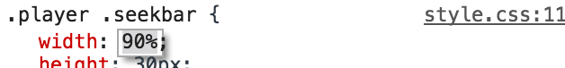
Il est possible de simuler des actions de souris avec l'icône de punaise
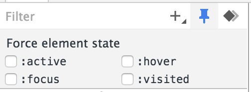
Il est possible de rajouter du style en cliquant sur l'icône + ou en cliquant sur l'accolade fermante
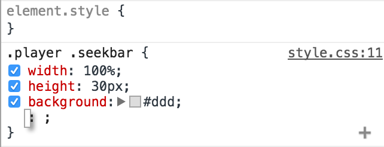
Un color picker permet de modifier très facilement les couleurs
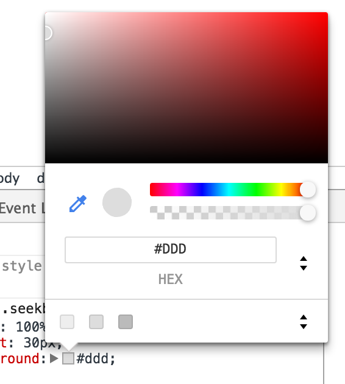
Un éditeur de tween permet de modifier facilement un easing (timing-function)
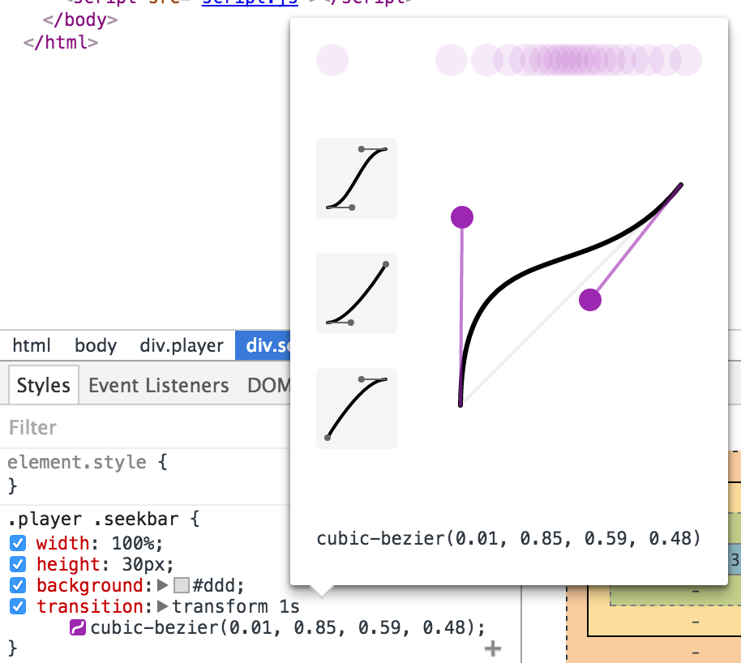
Un icône d'alert s'affiche si une propriété est mal déclarée. Le survoler permettra d'avoir plus d'information sur l'erreur
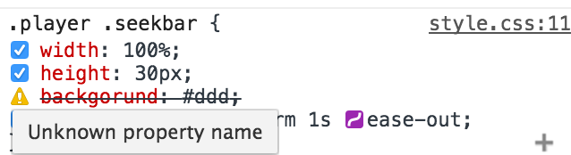
Les propriétés valides, mais inutilisées sont barrées
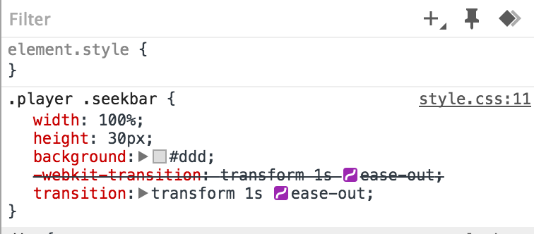
Les propriétés peuvent être activées et désactivées à l'aide de checkboxes

Un schema affiche les dimensions, borders, padding et margin de l'élément
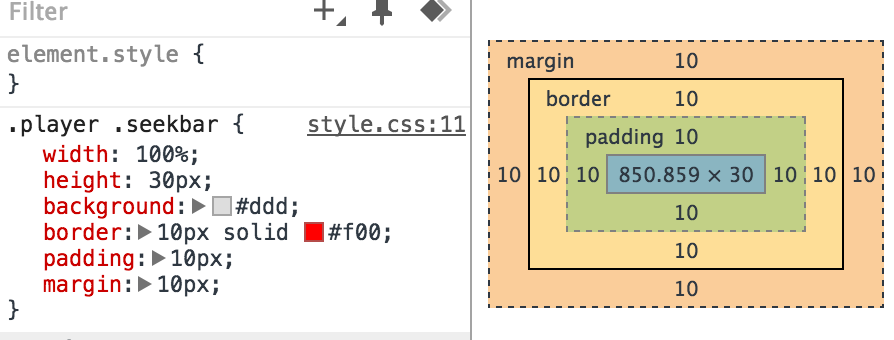
Events
L'onglet Event Listeners permet d'afficher toutes les écoutes d'événements
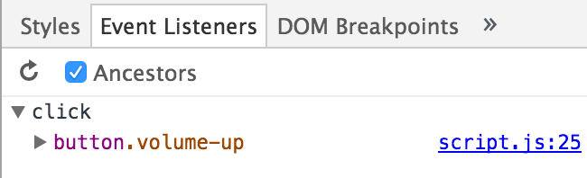
Breakpoints
L'onglet DOM Breakpoints permet de gérer les breakpoints (technique permettant d'arrêter l'éxécution d'un script pour pouvoir débugger)
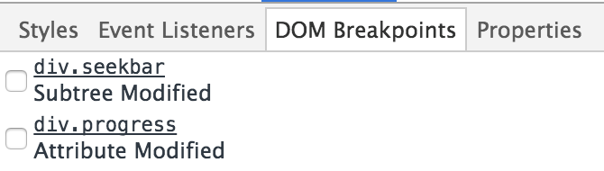
Dans le DOM, un clique droit sur un élément permettra de rajouter un breakpoint
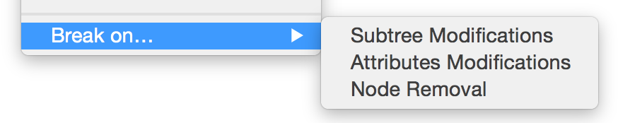
Events
L'onglet Properties affiche toutes les propriétés de l'élément
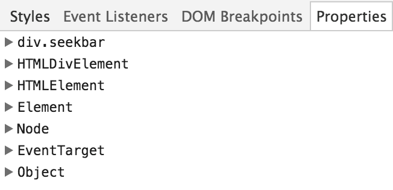
Network
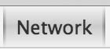
Permet de monitorer les activités réseau
Le dique noir permet de démarrer l'enregistrement de l'activité (automatique au chargement de la page si onglet ouvert)
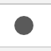
Il est possible de filtrer les résultats avec l'icône d'entonnoir
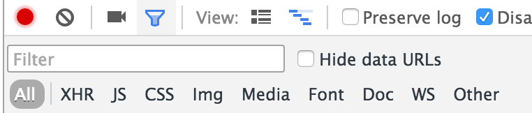
Le panneau de détails permet de connaître toutes les informations sur chaque requête
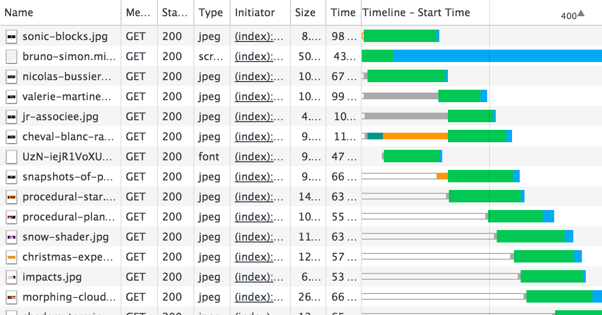
Il est possible de modifier les colonnes en faisant un clique droit dans l'entête des infos
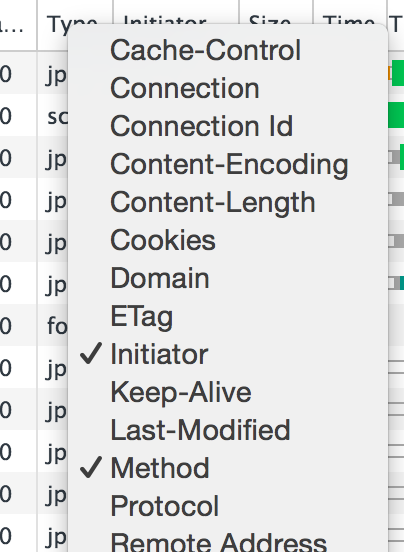
Survoler une requête affiche plus d'information
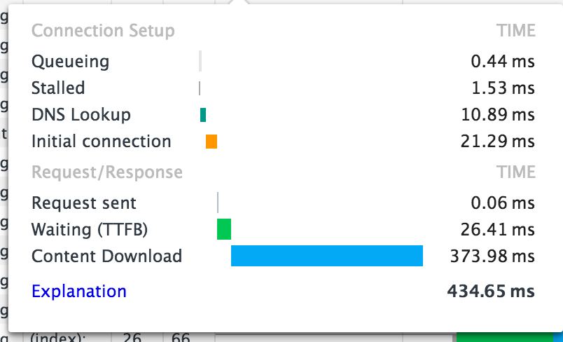
Cliquer sur une requête affiche encore plus d'informations
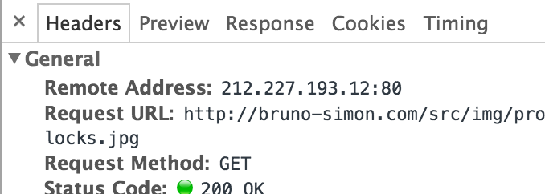
Sources
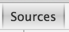
Affiche tous les contenus téléchargés par domaine
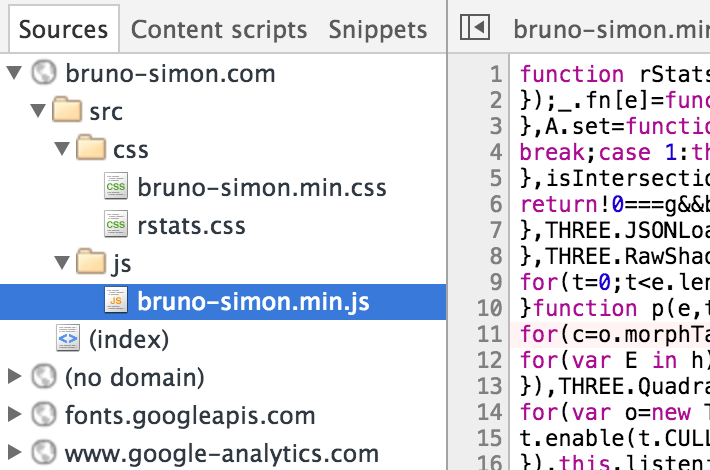
L'icône d'accolade permet de déminifier le code
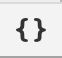
Le panneau de breakpoints permet d'arrêter l'éxécution d'un script pour pouvoir débugger
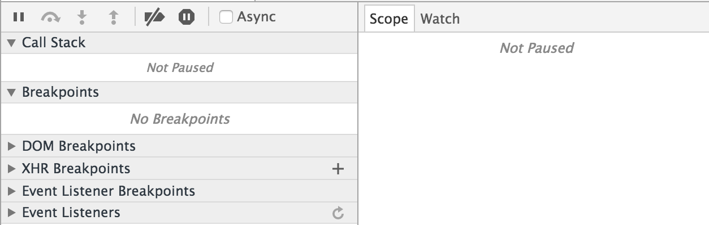
Timeline
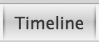
Enregistre et affiche divers activités (Fréquence d'affichage, Procésseur, Réseau, Mémoire, ...)

Comme pour l'onglet Network, il faut faut activer et désactiver l'enregistrement

Profiles
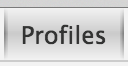
Permet d'analyser le temps que mettent les différents instructions
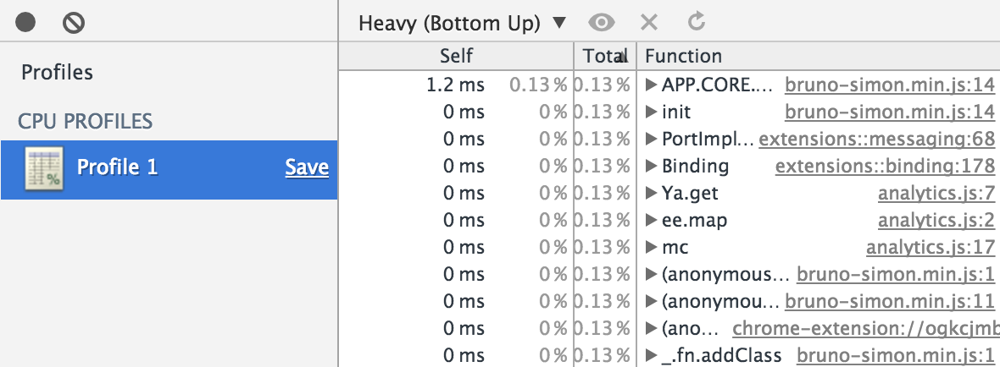
Comme pour l'onglet Network, il faut faut activer et désactiver l'enregistrement
Resources

Affiche toutes les données stockées (pas que des fichiers)
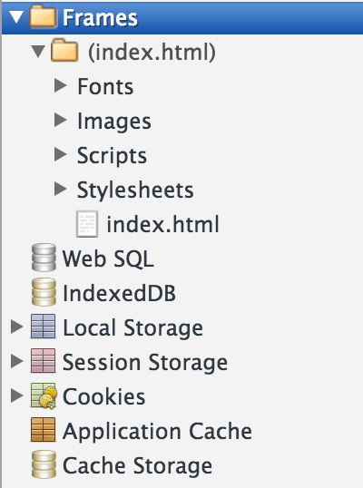
Audits
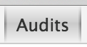
Permet d'obtenir un simple audit de la page
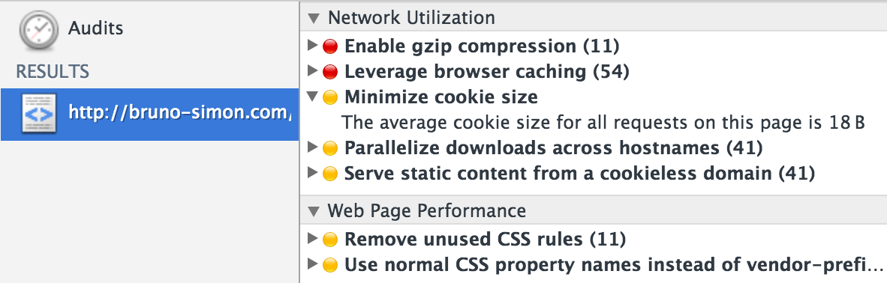
Pour un audit plus complet, utiliser d'autres outils tel que Google Page Speed
Console
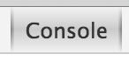
La console permet d'afficher des données envoyées en JS
console.log('coucou');
Il est possible de l'afficher de n'importe quel panneau en tapant sur ESC
Ou en choisissant Show console
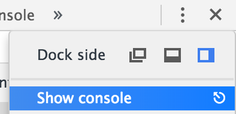
Il est possible d'écrire du JS dans cette console
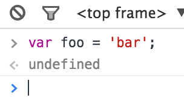
Il n'est pas nécessaire d'écrire console.log() pour afficher le contenu d'une variable
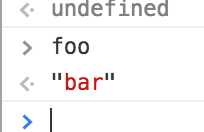
La console va afficher les éventuelles erreurs de chargement
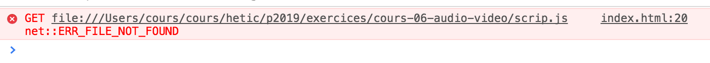
Il existe plusieurs façon d'afficher un contenu dans la console
console.log('coucou');
console.info('coucou');
console.warn('coucou');
console.error('coucou');
L'intérêt ici n'est qu'esthétique
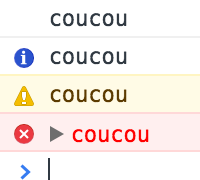
Il est possible de filtrer les résultats affichés
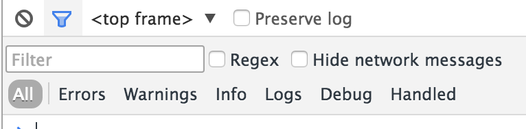
Logger plusieurs fois une même valeur aura pour effet d'incrémenter un compteur devant le log
C'est plus pratique et ça évite de planter l'ordinateur
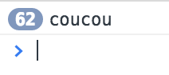
Logger un élément du DOM affiche un résultat similaire à l'affichage du DOM dans l'onglet Elements
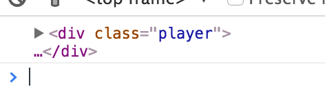
Un clique droit suivi de Reveal in Elements pannel permettra d'afficher l'élément directement dans le panneau de DOM
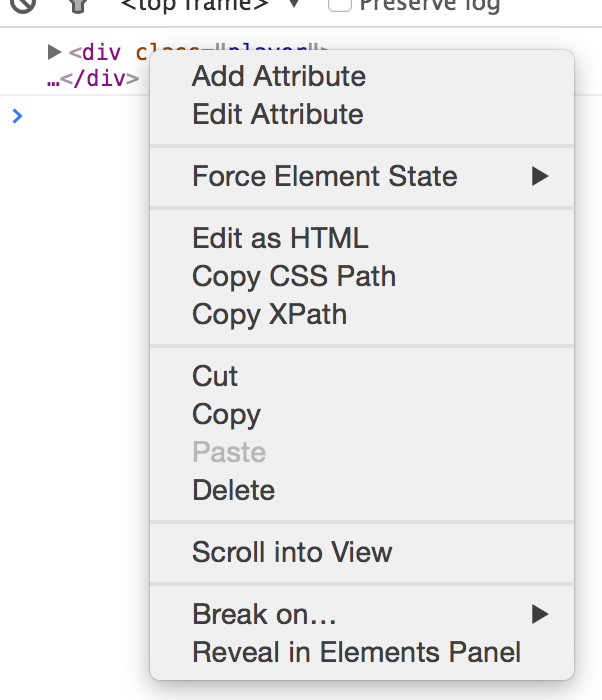
Lorsqu'un élément est sélectionné dans le DOM, $0 dans la console fera référence à cet élément
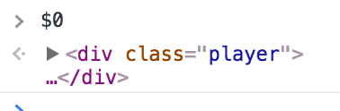
Émulation
L'une des grandes fonctionnalités des outils de debug de Chrome est la possibilité d'émuler plusieurs aspect
L'icône de smartphone permet d'activer l'émulation

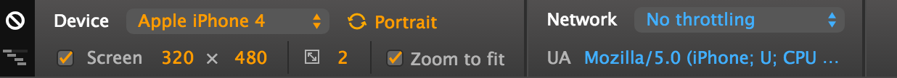
Un message d'avertissement prévient le développeur qu'il vaut mieux actualiser afin que la page prenne bien en compte l'émulation
La partie Device permet de simuler un autre device

- Device (modifie l'User Agent)
- Orientation
- Résolution
- Pixel ratio
La partie Network permet de simuler une connexion
UA permet de modifier sois-même l'User Agent
L'icône avec les rectangles en haut à gauche permet d'afficher un aperçu des règles de Media Queries
L'icône d'interdiction permet de réinitialiser les paramètres
Si le device choisi est de type touch, Chrome fera croire au site que c'est le cas
Options
Les outils de debug sont paramétrables
Pour cela, il suffit de cliquer sur les 3 points puis d'aller dans settings

Il existe de nombreuses options de personnalisation
Prenez le temps de les découvrir, mais cochez au moins la désactivation du cache
Performances
D'autres outils permettent de débuger le site et monitorer les performances
Ouvrez la mini console
Aller dans l'onglet Rendering
- Enable paint flashing
affiche les repaint (moins il y en a, mieux c'est) - Show layer borders
affiche l'espace que prennent les éléments - Show FPS meter
affiche la fréquence d'images - Show scrolling perf issues
(???)
Aller plus loin
Quelques comptes twitter